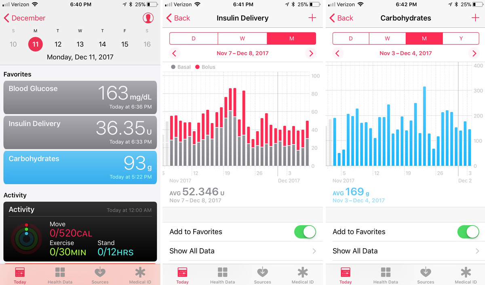

Apple Health FAQs
How does Loop use Apple HealthKit?¶
Loop uses Apple HealthKit as long term storage for glucose, insulin and carbohydrates. But there is more going on than simple storage.
It is important that permissions for Loop be properly configured for the Health app.
To view the list of data stored in Health
- Tap on the Health
 icon to open the app
icon to open the app - Tap on Blood Glucose, Carbohydrates or Insulin
- Scroll all the way to the bottom
- Tap on Show All Data
To Set Blood Glucose, Carbohydrates and Insulin as Favorites
- Tap on the Health icon to open the app
- There's a toolbar at the bottom of the screen (always visible in the app)
- Tap on the Browse icon (bottom right of toolbar)
- Tap on
- Other Data for Blood Glucose and Insulin
- Nutrition for Carbohydrates
- Tap each item, scroll down to Options section and tap on Add to Favorite
- Repeat until all three are added
- Tap on the Summary (bottom left icon of toolbar); Favorites show up first
Apple Health Storage¶
Is Apple Health access Required?
There is internal Loop storage of all data required for the app to operate with a 7-day history. (This is new with version 3.) So using Apple Health for data storage is not 100% required for the app to operate, but it is very useful and recommended.
If you do not give Loop permission to use Apple Health, you will see no records in the Health app from Loop for carbohydrates, insulin or glucose. LoopDocs assumes permission was enabled to Apple Health.
HealthKit Plots¶
The health app on the Loop phone provides useful plots of data since you started to Loop with that Apple ID. Examples for insulin delivery and carbohydrates are shown in the graphic below. New versions of iOS modified details of the display with the same or improved capabilities.

HealthKit Details¶
Glucose and Apple HealthKit¶
For Dexcom users with the Dexcom app on the Loop phone, the Dexcom app writes the value to Health with a 3-hour delay.
Loop reads the Dexcom information at the same time the Dexcom app gets the reading from the transmitter. It uses the glucose value to update predictions and stores it in Health.
If you look at your Health glucose readings, you'll notice the Loop icon for the last 3 hours and the Dexcom icon for times earlier than that.
All other CGM readings are reported with the Loop icon and there is no transition after 3 hours.
Carbohydrates and Apple HealthKit¶
In Loop* 2.2.x, if you set Apple Health app permissions to allow it, Loop will read carbohydrates from the Health app. If you give a third-party app permission to store carbohydrate data in Health, and do not realize that Loop reads that information, you might get unexpected insulin delivery based off those carbs. To avoid that unanticipated behavior, the directions tell you to set permissions to allow Loop to write to carbohydrate storage but not read.
In Loop 3, the option to read from Health carbohydrates is explicitly disabled and can only be enabled by setting up special parameters when you build the app. The insructions for the code customization are not in LoopDocs yet. If it is important to you to use a third-party app to record carbohydrates and have Loop read the information and automatically dose with insulin, ask for help in zulipchat.
Insulin and Apple HealthKit¶
The relationship between Loop and Apple HealthKit is very important to understand if you ever need to do one of these actions:
- Dose insulin from another source (injection, smart pen)
- Remove insulin that wasn't really given (failed site or forgot to reattach a tubed pump)
Be Cautious
Allowing users to delete events is fairly risky. If a user deletes a dose accidentally, or does not understand the IOB impact while in closed loop is enabled, then Loop may start giving insulin that is not needed.
One method to deal with insulin that wasn't given is to go disable closed loop for 3 to 6 hours. However, if you take care, you can remove insulin from Loop.
Developer Notes: Pump Events and Insulin Delivery
Loop stores Pump Events separately from Insulin Delivery. With permissions set to allow Loop to read insulin from Health (recommended), the Insulin Delivery store contains doses entered from Health as well as the subset of pump events that represent doses.
Pump Events are displayed by tapping an insulin chart on the main screen and viewing the Event History tab.
When you delete a pump event using the Event History interface in Loop, the associated entry in Insulin Delivery is not deleted.
Bolus¶
- When Loop commands the pump to provide a bolus, either manual or automatic, it is shown in the
Event Historyand in the Health app insulin data list- It may take a loop cycle or two to show up in Health, but it will appear
- When you add insulin, such as from an injection, to the Health app, Loop reads it and adds it to IOB
- It will not be added to the Event History because this is not a pump event
- Loop 3 adds a new feature that allows you to add non-pump insulin from within the app instead of requiring you to add it inside the Health app
- If you delete an entry from the
Event Historylist, but leave that same entry in Health, Loop reads it back from Health- It will not show up in the Event History, but it will still contribute to IOB
- You must delete a pump event from both
Event Historyand Health data; it is best if you do this within one loop cycle - If that dose showed up in
Event Historybut you could not find it in Health, look again after the next loop cycle
- If you delete an entry from Health, but leave that same entry in
Event History, Loop reports it to Health again- You must delete a pump event from both the
Event Historylist and Health data; it is best if you do this within one loop cycle
- You must delete a pump event from both the
Pro Tip
Write on a piece of paper the times and values you think you should delete.
Look at those values in both Event History and Health Insulin data list.
Record what Loop is reporting as IOB.
Review the values one more time, and then delete those entries in both places. Review IOB again. If you made a mistake, you can refer to that written list and adjust appropriately.
Basal¶
Loop keeps track of how much basal is delivered so the IOB is properly reported. In older versions of Loop, there may be occasional display glitches, but the internal accounting is correct and updates every Loop Cycle.
Developer Notes: Scheduled Basal is Not a Pump Event
Scheduled basal is not a pump event so you will not see it listed in the Event History tab.
Scheduled basal does not affect IOB when delivered as scheduled.
The Insulin Delivery store keeps track of the insulin delivered via scheduled basal.
Loop updates the amount of insulin delivered through basal (both scheduled and temporary) to Health at regular intervals - this does not happen every Loop Cycle when basal rates are not changing. The updates to Health happen:
- At midnight
- When the scheduled basal rate changes
- When a temporary basal rate changes
A simple example to illustrate this - for a pump with smallest insulin delivery of 0.05 U:
| Schedule | Temp Basal (TB) | Health | Explanation |
|---|---|---|---|
| 12:00 AM 0.4 U/hr |
--- | --- | Start of Day / Start of Example |
| 06:00 AM 0.5 U/hr |
--- | 06:00 AM Basal 2.4 U |
Loop reports insulin delivered by basal for the last 6 hours when the scheduled basal rate has a new entry |
| --- | 07:15 AM 0.0 U/hr |
07:15 AM Basal 0.6 U |
Loop reports insulin delivered by basal since last report up to time TB starts |
| --- | 07:45 AM TB expires |
07:45 AM Basal 0 U |
No insulin was delivered during TB |
| 08:00 AM 0.4 U/hr |
--- | 08:00 AM Basal 0.1 U |
Loop reports insulin delivered by basal since last report; the scheduled basal rate has a new entry |
Tidepool and Apple HealthKit¶
Choose One Method for Upload
Previously, the only method to get Loop data into Tidepool was to use their mobile app on your phone and enable that app to read from Apple Health to upload data to Tidepool.
You can now upload directly from Loop to Tidepool - this is the preferred method.
With the direct upload, be sure to disable your Tidepool mobile app from reading Apple Health on your phone. If you do not do this, you will have double uploads of all your data. You can still make notes on the mobile app; it will get your data via the internet from Tidepool.
If you are currently using the Tidepool mobile app to upload and switch to direct upload, you will get one week of double uploads. You can filter the upload source for that week on the Tidepool web browser tool.
How Do I Modify Apple HealthKit Permissions¶
Loop Health Permissions¶
You can review and modify the Apple HealthKit permissions for the Loop app.
Open the Apple Health app ( icon)
- Find the toolbar at the bottom that says Sharing
- Scroll to the bottom of Sharing
- Select Apps
- Select Loop
At this point, you can review and modify the settings.
CGM Health Permissions¶
If you choose to, you may add permission for your CGM app to write to Apple Health. Loop will read glucose from Apple Health, but only while the phone is unlocked and the app is open.
Note that if a glucose value is added to Apple Health "now", Loop will pick up that value and use it for the glucose prediction. This can happen with a finger-stick entry or some Libre third-party apps, but not with Dexcom, which has a 3-hour delay before writing to Health.
Dexcom¶
The Dexcom app for both G6 and G7 has a 3-hour delay before writing to the Health app. If you tap Glucose data in Health, scroll to the bottom to select Show All Data and then scroll back in time, notice the Loop icon is replaced by either the G6 or G7 icon starting 3 hours ago.
If you happen to wear a Dexcom G6 and G7 sensor at the same time, then starting 3 hours in the past, both sensor traces will show up in the Loop Glucose chart.
Loop only uses data from the CGM you selected as your CGM for closed-loop insulin delivery, but don't be surprised at the double trace if you want to wear both during the transition from G6 to G7.
Add Permission to Health for Dexcom to Write Glucose
If either the G6 or the G7 has permission to write to Apple Health, then Loop will delete the Loop glucose data in Apple Health that are older than 3 hours and newer than 1 week. The Dexcom app will write its glucose values to Health when each value is 3 hours old.
If you transition from G6 to G7 (or alternate back and forth), be sure that at least the app you are currently using has permission to write to health. (I inadvertently forgot to turn on health permission for G7. By the time I noticed, I had a gap of several days in my Apple Health storage of glucose values.)
Libre¶
There are several choices for reading Libre sensors.
With Loop dev (will be Loop 3.4.x after release), LibreTransmitter is integrated with the Loop app.
The frequent updates (1-minute glucose data) provided by Libre did cause some issues with released versions (Loop 3.0 and Loop 3.2.x with customizations that use various third-party apps to read the Libre). These were fixed initially by modifying the third-party apps to limit how frequently they supplied glucose data.
With Loop dev (will be Loop 3.4.x after release), the Loop app only initiates a closed-loop cycle automatically following a new glucose value if it has been more than 4.2 minutes since the last one.
Loop 3.0 and Loop 3.2.x versions do not have that limitation on how frequently Loop responds to a new glucose reading. There is a Customization that incorporates the 4.2 minute interval check which can be applied to Loop 3.2.2.
How Do I Change Glucose Units?¶
The glucose units (mg/dL or mmol/L) Loop uses match what is in Apple Health. Once you connect a device that reports glucose to the phone, make sure the units match the device. Note - you can change units for Dexcom Share and it translates units for you - not sure about other devices.
- These instructions to change Blood Glucose units are for iOS 15
- Select the Health app (Heart icon)
- There's a toolbar at the bottom - select Browse
- Scroll to find Vitals
- Select Blood Glucose
- Scroll to the bottom and select Unit
- Tap on Unit, if it isn't right, and select the correct units
- While you are there - go on and select Blood Glucose as a Favorite - it will be easier to find next time